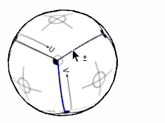

Crease Tool
Creates and adjust creases for the selected edges.
Tool Operation
- Select edge or edges to crease.
- Click down on a crease label and drag the mouse up or down.
- Release the mouse to end the operation.
Modifier Keys
- Ctrl = Add an entity to set of selected entities.
- Shift+Ctrl = Subtract an entity from set of selected entities.
- Shift = Toggle whether an entity is within set of selected entities.
Adjusting Crease
While adjusting a crease the following modified keys can be used:
- Shift = Snap to whole values.